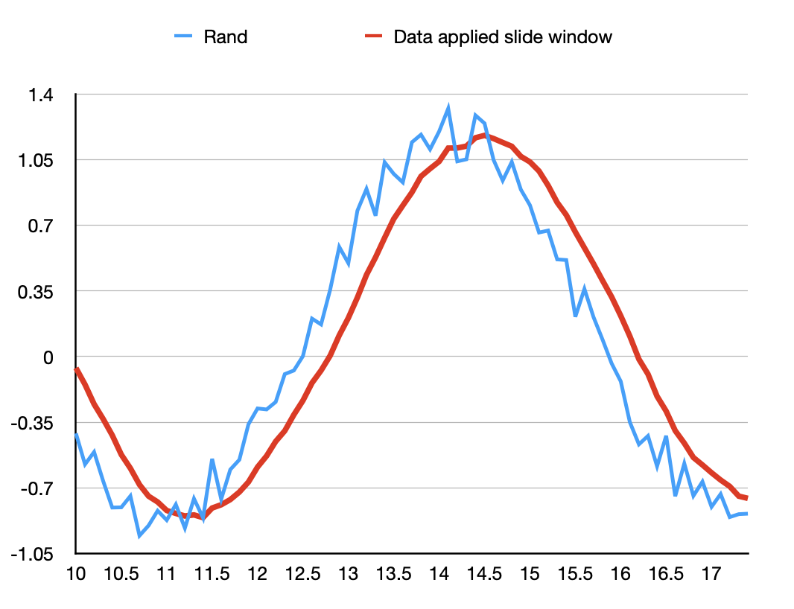

x + y == ~(~x - y). We will explain this later. The raw data accessed from the IMU sensor contained extensive noise, which complicated the problem. Therefore, to acqurie a clean data, we needed to apply a filter to smooth the raw data. We compared slide window filter and Kalman filter and decided to use slide window because of the adaptabiltiy and simple execution. It mainly averaged the past data in a fixed window size plus the current data. By adjusting the windows size, we can acquire data in different smooth level. A slide window example is displayed below, effects can be easily observed.

D e s c r i p t i o n .
The original magic_wand_ble model can only classify between 0-9. We built our network to classify between both 0-9 and A-Z, which means our model has 36 classes now.
Colab version of the training part: https://colab.research.google.com/drive/1JqMVoSU88o-7ZZmzwoQUtnsRRwZ0dx7c?usp=sharing
The accuracy of our model after 50 epochs of training:

We cannot find how the author, ArduCAM, of the magic_wand_ble project train the original model. Thus, we built a classification network from scratch, referencing the network structure of magic_wand project of tflit.
We encountered a warning stating WARNING:absl:Found untraced functions such as _jit_compiled_convolution_op, _jit_compiled_convolution_op while saving (showing 2 of 2). These functions will not be directly callable after loading.. We found this issue is still opening on the TFLite Github. We were not sure if this warning would affect the loading process of our model.
In the magic_wand_ble code, it requires the type of the model input to be kTfLiteInt8 = 9. We specified the data type of our dataset as int8 when we converted data to tensor tf.convert_to_tensor(this_data_batch, dtype=tf.int8). However, we load the pre-trained model to the magic_wand_ble system, it shows that the model input data type is still kTfLiteFloat32 = 1. We do not know how to solve this yet.

The new model is about twice as big as the original model (original model: around 20000 parameters; our model: around 50000 parameters). Our system will out of memory after several times of writing.

PIO is a good tool to work as a flexiable commmunication port such as UART, IIC or SPI, but considering we only need one I2C port for our application so we gave up this idea. We also considered using PIO to do simple data processing: addition. PIO can achieve addition in the way x + y == ~(~x - y).
to do so pio will invert x and y and then using a loop to execute while y x it did a fair work if it calculates small numbers while if the number is extremenly large or it is a negative number it is possible to reach 2 32 iteration for a result in our experiment it is very slow to calcute summation between two large positive number or addition including negative number so we had to gave up this idea as well but if anyone knows how to optimze this process feel free to contact us ">* To do so, PIO will invert x and y and then using a loop to execute while(y--) x--. It did a fair work if it calculates small numbers, while if the number is extremenly large or it is a negative number, it is possible to reach 2^32 iteration for a result, in our experiment, it is very slow to calcute summation between two large positive number or addition including negative number. So we had to gave up this idea as well. But if anyone knows how to optimze this process, feel free to contact us!
| Member | Github Account | Contribution |
|---|---|---|
| Rongqian Chen | @WillChan9 | Implemented curser moving, mouse left clicking, mouse right clicking functions. |
| Qi Xue | @sueqixue | Collected data for gesture recognization model, building the model from scartch (including the data processing, model structure tuning, and model training), and implemented model deploying function which connected the gesture recogniztion model with the system. |
| Junpeng Zhao | @PZZ97 | Investigate tinyusb API, IMU data flitering algorithm, reconstruct code body to adapt to multifunctions, PIO application. |
| Module | Quantity |
|---|---|
| Pico4ML | 1 |
| MPU6050 | 2 |
| 3D printed rings | 2 |
| glove | 1 |
Arducam/pico-tfmicro/magic-wand-ble
Tinyusb